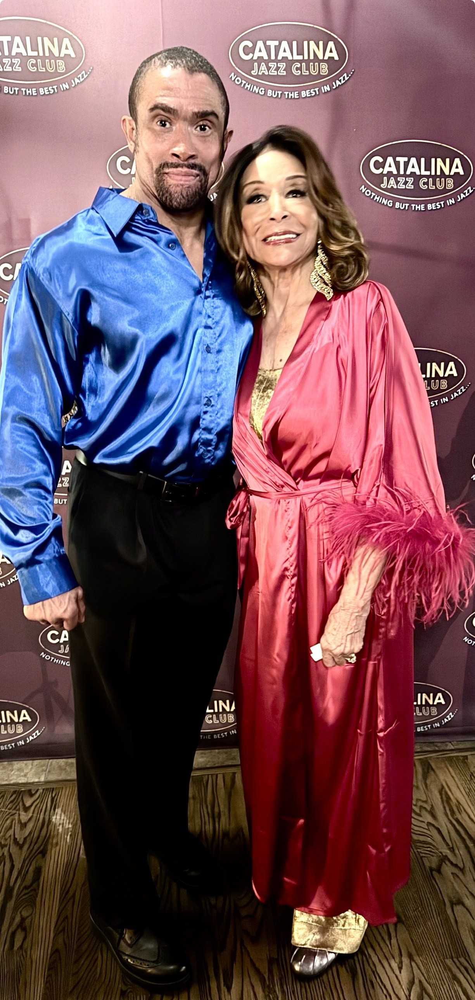

At eighty-four, on her birthday weekend, Freda Payne sang her heroes back into the room
A sold-out house on Sunset Boulevard. Nine women who built American song. And a singer who knew half of them personally, giving thanks from the stage that she is still here to do it.
LOS ANGELES · September 30, 2026 at 9:00 AM Pacific · By Gospel News Access Staff

There is a moment near the end of the evening that tells you what kind of woman Freda Payne is.
She had just spent ninety minutes at the Catalina Jazz Club on Sunset Boulevard singing the women who made her — Ella Fitzgerald, Sarah Vaughan, Lena Horne, Nancy Wilson, Dinah Washington, Peggy Lee, Gloria Lynne, Dakota Staton, Eartha Kitt. The house was sold out. Her son was announcing from the wings. It was the weekend of her birthday.
And she stopped to say that she was blessed to see another year and still be working, and that she thanked God for it — and then she said the thing that stayed with everyone in the room. A lot of the women being honoured that night never got to.
Dinah Washington was thirty-nine when she died.
Freda Payne is eighty-four, and on Saturday night she was standing in gold lamé on a Los Angeles stage with a full band behind her, giving thanks.
A show built on memory, not imitation
“Freda Payne Portrays and Honors Legendary Ladies of Song” was written and directed by the playwright and producer Donald B. Welch, a friend of Payne’s for many years, who brought her the idea and would not let it go.
“He said, Freda, I want you to do this show honouring several ladies,” Payne recalled afterwards. “All these ladies were some of my favourite singers back when I started wanting to be a professional singer.”
What separates the evening from every other tribute show is that Payne is not performing history. She lived it. She met Sarah Vaughan and came to know her, and describes her voice the way a musician would — “like listening to a violin or a viola. Very soothing.” She met Dinah Washington as a young woman and was frightened of her, and won her over by refusing to be pushed around.
She sang “How High the Moon” for Ella, “Body and Soul” for Sarah, “Guess Who I Saw Today” for Nancy Wilson, “I Wish You Love” for Gloria Lynne, and “The Late Late Show” for Dakota Staton.
That last one carried her sixty years back in four bars. She was sixteen, she said, spending a summer at Idlewild, the Black resort in Michigan, allowed into the matinees because she was too young for the nightclubs at night. She heard Dakota Staton sing it there, and something about her own life was settled.
Then, for Peggy Lee, she sang “Fever.” She brought two men up onto the stage with her, in gold lamé, on her own birthday weekend, and worked the song between them at exactly the tempo she wanted. The room came apart.

The company
Her son, Gregory Abbott Jr., hosted and announced the evening. Payne made a point of his name twice, unprompted, the second time cutting herself off mid-sentence to make sure he was properly credited.

Thomasina Gross opened the show portraying Eartha Kitt, in a performance Payne called “spot on” — and it was, right down to a staged scene at a candlelit table that she held by doing almost nothing at all.
The band was led by musical director and pianist Josh Nelson, with Chris Colangelo on bass, Ricky Woodard on saxophone and Marcello Carelli on drums. Actors Terryl DaLuz and Kyrel Jaundoo appeared, with Chuka Aruh and Mi-cha-El Wat as escorts.
Stefanie Powers and Loretta Devine were in the audience, among many other familiar faces from the industry, on a weekend when the MTV Video Music Awards had every camera in Los Angeles pointed across town.

What it was really about
Tribute shows are usually about the dead. This one was about gratitude — for the women who went first, for a voice that still works after six decades, and for another year to use it.
Payne sails at the end of October aboard Holland America, performing on a cruise from Fort Lauderdale to Puerto Rico and back, on a bill that also carries Darlene Love and Wayne Newton.
Reported by the Music Desk of Newswire Hollywood and carried here by arrangement. Photographs by Terry Bryant.